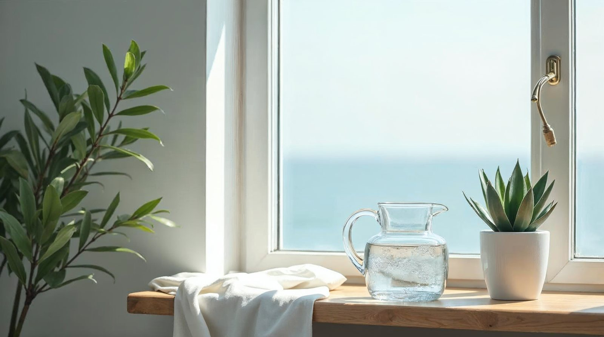
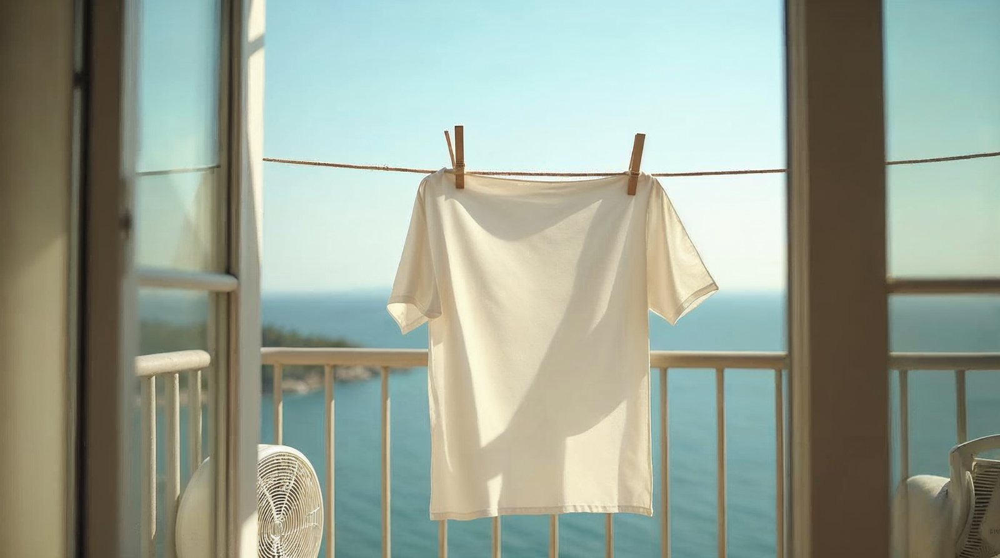
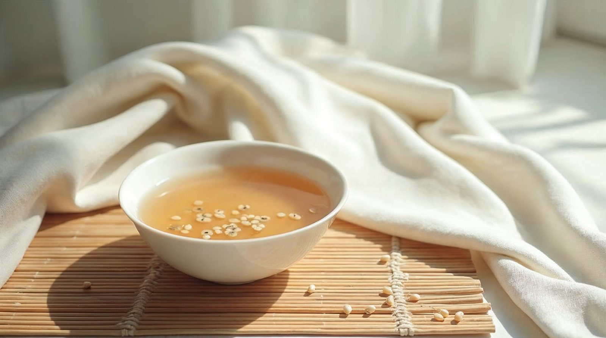

이종호 한의사 감수좋은꿈참사랑한의원 대표원장 (한의사 면허번호 19769)발행 2026-11-23 · 수정 2026-11-26
이 글의 차례
- 왜 이런 불편이 생길 수 있나요
- 비슷해 보이는 피부 증상과는 어떻게 구분하나요?
- 먼저 이렇게 여쭙니다
- 일상에서 먼저 해 볼 수 있는 것
- 하루를 이렇게 나눠 관리해 보세요
- 상황별 예시
- 스스로 점검해 보세요
- 한의학에서는 땀띠를 어떻게 바라보나요?
- 자주 하는 오해는 무엇인가요?
- 잠자리는 어떻게 바꿔 볼까요?
- 땀이 유난히 많다면 무엇을 함께 살피나요?
- 땀띠 자리는 어떻게 씻고 말릴까요?
- 일터가 덥다면 무엇부터 바꿀까요?
- 한의원에서 함께 살필 수 있는 경우
- 첫 진료는 어떤 순서로 진행되나요?
- 다시 오셨을 때는 무엇을 비교하나요?
- 아이에게 생겼다면 무엇을 살피나요?
- 얼마나 지켜보고 언제 상담할까요
- 이렇게 기록해 오시면 상담이 쉬워집니다
- 이런 증상은 먼저 확인이 필요합니다
- 함께 읽으면 좋은 글
땀이 차는 곳에 붉은 좁쌀 같은 것이 올라오는 땀띠는 땀이 피부 밖으로 잘 빠져나가지 못하고 머물 때 생기는 경우가 많아, 땀이 머무는 시간을 줄이고 시원하고 마른 상태를 유지하는 것이 기본입니다.
장마철과 한여름에는 출퇴근길 지하철과 버스에서 땀이 차는 시간이 길어 목 뒤, 팔 접히는 곳, 가슴 밑이 따끔거린다는 분이 많습니다. 겨울에도 두꺼운 패딩을 입고 난방이 센 실내에 오래 있거나 전기장판을 높게 켜고 자면 등과 허리에 비슷하게 올라오기도 합니다.
왜 이런 불편이 생길 수 있나요
- 땀구멍이 막혀 땀이 피부 속에 고이면 작은 붉은 알갱이와 따끔거림이 생길 수 있습니다.
- 목 뒤, 팔 접히는 곳, 가슴 밑처럼 살이 겹치는 곳은 땀이 잘 마르지 않습니다.
- 통풍이 안 되는 옷, 오래 앉아 있는 자세, 습한 장마철이 겹치면 더 심해집니다.
- 한의학에서는 땀이 유난히 많은지, 더위에 쉽게 지치는지도 함께 살핍니다.
- 땀을 닦지 않은 채 두꺼운 연고를 덧바르면 땀구멍이 더 막히기도 합니다.
- 등과 엉덩이처럼 의자나 침대에 오래 닿는 자리는 땀이 빠져나갈 틈이 없어 잘 생깁니다.
땀은 피부 깊은 곳에서 만들어져 가느다란 관을 타고 피부 밖으로 나옵니다. 땀이 너무 많거나 피부 겉이 오래 젖어 있으면 이 관의 출구가 붓고 막혀, 빠져나가지 못한 땀이 피부 속에 고입니다.
고인 자리가 얕으면 투명한 이슬 같은 물집이, 조금 깊으면 붉은 좁쌀과 따끔거림이 생깁니다.
비슷해 보이는 피부 증상과는 어떻게 구분하나요?
- 땀이 날 때마다 몇 분 안에 좁쌀처럼 따끔하게 올라왔다가 한두 시간 안에 가라앉는다면 땀과 관련된 두드러기와 구분해 봅니다.
- 가슴 밑, 사타구니처럼 접히는 곳이 넓게 붉고 축축하며 가장자리에 작은 점이 흩어져 있다면 곰팡이균이 함께 있는 경우가 있어 피부과 확인을 권합니다.
- 털구멍마다 고름이 잡힌 뾰루지가 생긴다면 모낭염 쪽으로 살펴봅니다.
- 새로 바꾼 옷이나 세제, 파스를 붙인 자리와 모양이 겹친다면 닿은 물건에 대한 반응일 수 있습니다.
땀띠는 시원하고 마른 상태를 하루 이틀 유지하면 따끔거림이 덜해지는 경우가 많습니다. 그렇게 해도 그대로라면 다른 원인을 함께 살펴보는 것이 좋습니다.

먼저 이렇게 여쭙니다
- 올라오는 자리가 주로 땀이 차는 곳인가요?
- 하루 중 땀을 많이 흘리는 시간이 언제인가요?
- 옷은 주로 어떤 소재를 입으시나요?
- 가려움보다 따끔거림이 더 큰가요?
- 땀띠가 생긴 자리에 무엇을 바르셨나요?
- 잘 때 땀을 흘려 이불이나 베개가 젖는 날이 있나요?
- 더운 날 쉽게 지치거나 입맛이 떨어지시나요?

일상에서 먼저 해 볼 수 있는 것
- 땀을 흘린 뒤 미지근한 물로 헹구고 잘 말리기
- 통풍이 잘 되는 면이나 기능성 소재 옷 입기
- 실내 온도를 너무 덥지 않게 유지하기
- 두꺼운 연고나 파우더를 겹겹이 바르지 않기
- 잘 때도 땀이 차지 않게 얇은 옷과 시원한 침구 쓰기
- 씻을 때 때수건이나 거친 타월로 문지르지 않기
- 접히는 곳은 씻은 뒤 선풍기 바람이나 드라이어 찬 바람으로 마저 말리기
하루를 이렇게 나눠 관리해 보세요
- 출근길: 땀이 잘 차는 목 뒤와 등에 닿는 옷은 얇고 헐렁한 것으로 고르고, 작은 손수건을 챙기기
- 일하는 중: 한 시간에 한 번은 자리에서 일어나 등과 엉덩이에 바람이 통하게 하기
- 땀을 많이 흘린 뒤: 젖은 옷은 되도록 빨리 갈아입고, 물티슈보다 젖은 수건으로 닦은 뒤 말리기
- 잠들기 전: 미지근한 물로 짧게 씻고, 침실은 덥지 않게 맞춘 뒤 얇은 면 잠옷 입기
모든 것을 다 하지 못해도, 땀이 젖은 채 머무는 시간을 한 시간이라도 줄이는 것이 출발점입니다.
상황별 예시
- 예를 들어 하루 종일 가죽 의자에 앉아 운전하는 일을 하는 경우라면, 등과 엉덩이에 땀이 차기 쉬워 통풍이 되는 방석을 깔고 쉬는 시간마다 차에서 내려 등을 말리는 것부터 해 볼 수 있습니다.
- 예를 들어 주방이나 세탁소처럼 뜨거운 열기 옆에서 일하는 경우라면, 갈아입을 속옷을 한 벌 더 챙기고 점심시간에 한 번 갈아입는 습관을 함께 정합니다.
- 예를 들어 운동을 마치고 젖은 운동복을 입은 채 집까지 오는 경우라면, 운동이 끝나면 바로 마른 옷으로 갈아입는 것만 바꿔도 접히는 곳의 변화를 비교해 볼 수 있습니다.
- 예를 들어 겨울에 두꺼운 패딩을 입고 난방이 센 지하철을 오래 타는 경우라면, 지하철 안에서는 지퍼를 열어 열기를 빼고, 목도리를 잠시 풀어 목 뒤에 땀이 차지 않게 해 볼 수 있습니다.
- 예를 들어 허리띠 자리에 살이 겹치는 경우라면, 허리 접히는 곳에 땀이 머물기 쉬워 허리가 넉넉한 옷을 입고 씻은 뒤 그 자리를 잘 말리는 것부터 정합니다.
스스로 점검해 보세요
- 땀에 젖은 옷을 한 시간 넘게 그대로 입고 있는 날이 많나요?
- 합성 섬유처럼 바람이 잘 통하지 않는 옷을 자주 입으시나요?
- 땀띠 자리에 연고나 파우더를 여러 번 덧바르셨나요?
- 잘 때 등과 목에 땀이 차서 깨는 날이 있나요?
- 더운 곳에 오래 있으면 쉽게 지치고 입맛이 떨어지나요?
- 하루 이틀 시원하게 지내도 따끔거림이 그대로인가요?
앞의 네 항목은 생활에서 바꿀 수 있는 부분이라 하나씩 줄여 보시고, 마지막 항목에 해당한다면 기록을 챙겨 상담을 받아 보세요.
한의학에서는 땀띠를 어떻게 바라보나요?
한의학에서는 땀을 몸의 열과 물기가 밖으로 나오는 길로 보고, 땀이 지나치게 많거나 잘 마르지 않는 것을 몸의 경향과 함께 살핍니다. 더위를 몹시 타고 얼굴이 쉽게 붉어지는 분, 반대로 조금만 움직여도 기운이 빠지며 땀이 흐르는 분은 살피는 방향이 다릅니다.
그래서 진료실에서는 땀이 언제, 어디에 많이 나는지, 땀을 흘린 뒤 기운이 빠지는지, 입맛과 잠은 어떤지를 함께 여쭙습니다. 땀띠 자리를 시원하고 마르게 지키는 일과 함께 이런 몸의 흐름을 살피면, 땀이 많은 계절을 보내는 방법을 정리하기 쉬워집니다.
자주 하는 오해는 무엇인가요?
- 땀띠에는 파우더를 듬뿍 바르면 된다는 생각: 젖은 피부에 덧바르면 뭉쳐 땀구멍을 더 막을 수 있습니다.
- 연고를 두껍게 바르면 빨리 가라앉는다는 생각: 기름진 연고를 두껍게 덮으면 땀이 더 갇히는 경우가 있어, 처방받은 연고라면 바르는 양과 방법을 처방한 곳에 여쭤 보세요.
잠자리는 어떻게 바꿔 볼까요?
밤에는 몸이 이불과 매트리스에 닿아 있는 시간이 길어 등과 목, 엉덩이에 땀이 차기 쉽습니다. 땀띠가 잦다면 잠자리부터 살펴보세요.
- 침실 온도는 덥지 않게, 선풍기는 몸에 직접 닿지 않게 벽 쪽으로 돌려 두기
- 면이나 마 소재의 얇은 잠옷과 침구 쓰기
- 전기장판은 겨울에도 낮은 온도로, 잠든 뒤에는 꺼지게 맞추기
- 베개 커버와 이불 커버를 자주 빨아 땀이 쌓이지 않게 하기
땀이 유난히 많다면 무엇을 함께 살피나요?
같은 더위에도 남들보다 유난히 땀이 많다면 땀이 나는 자리와 때를 함께 봅니다. 손발과 겨드랑이에만 많은지, 온몸에 흐르는지, 긴장할 때 더한지, 밤에 잘 때 흐르는지에 따라 살피는 방향이 달라집니다.
밤에 잘 때 이불이 젖을 만큼 땀이 나고 체중이 빠지거나 열이 함께 있다면 내과 확인을 먼저 받아 보시는 것이 좋습니다.
땀띠 자리는 어떻게 씻고 말릴까요?
땀띠가 올라온 자리는 미지근한 물로 가볍게 헹구고, 비누는 순한 것을 조금만 써 주세요. 때수건이나 샤워 타월로 문지르면 따가움이 늘 수 있어 손으로 부드럽게 씻는 편이 좋습니다.
씻은 뒤에는 수건으로 눌러 물기를 닦고, 접히는 곳은 잠시 팔을 들거나 다리를 벌려 바람이 통하게 해 주세요. 피부가 완전히 마른 뒤 옷을 입는 것이 기본입니다.
일터가 덥다면 무엇부터 바꿀까요?
일하는 곳의 온도를 바꾸기 어렵다면, 몸 쪽에서 할 수 있는 작은 방법을 찾아봅니다.
- 갈아입을 속옷이나 얇은 티셔츠를 한 벌 챙기기
- 작은 손풍기나 선풍기로 목 뒤와 등에 바람 보내기
- 물을 조금씩 자주 마셔 몸의 열을 식히기
- 쉬는 시간에는 시원한 곳에서 땀을 닦고 말리기
한의원에서 함께 살필 수 있는 경우
- 땀이 유난히 많고 피부 트러블이 반복되는 경우 땀의 양과 몸의 열 경향을 함께 살핍니다.
- 더위에 쉽게 지치고 잠을 설치는 경우 여름철 생활 리듬을 함께 살핍니다.
- 소화가 떨어지고 입맛이 없는 경우 함께 여쭙니다.
- 피부과 진료를 받고 있으면서 땀과 잠, 소화 같은 몸의 흐름도 함께 살피고 싶은 경우입니다.
좋은꿈참사랑한의원에서는 땀띠 자리만이 아니라 땀이 많은 시간과 일하는 환경, 더위를 타는 정도를 함께 살핀 뒤 침이나 한약 상담 등 상태에 맞는 방법을 정합니다.
바르는 연고나 먹는 약이 있다면 이름을 알려 주세요. 한약을 상담할 때는 지금 드시는 약을 먼저 확인하고, 임신 중이라면 먼저 말씀해 주시고 산부인과와도 상의해 주세요.
첫 진료는 어떤 순서로 진행되나요?
- 모든 분의 맥을 먼저 짚고, 땀띠가 올라온 자리와 시작된 때, 땀을 많이 흘리는 상황을 듣습니다.
- 올라온 자리를 직접 보며 좁쌀의 모양과 붉은 정도, 진물이 있는지 확인합니다.
- 바르고 있는 연고와 파우더, 입는 옷의 소재를 여쭙고, 필요하다고 판단되면 혀의 모습도 살핍니다.
- 땀의 양과 때, 더위를 타는 정도, 입맛과 잠을 여쭌 뒤 상태에 맞는 방법을 정하고, 옷과 씻는 습관, 잠자리에서 바꿀 것을 말씀드립니다.
다시 오셨을 때는 무엇을 비교하나요?
두 번째 진료부터는 다시 맥을 짚고, 그사이 땀을 많이 흘린 날과 땀띠가 올라온 날이 얼마나 겹쳤는지, 옷과 잠자리를 바꾼 뒤 따끔거림은 어떤지 함께 봅니다.
땀이 많은 시간대가 일터와 겹친다면, 그 시간에 할 수 있는 작은 방법을 다시 고릅니다. 더위에 지치는 정도와 입맛, 잠도 이어서 여쭙습니다.
아이에게 생겼다면 무엇을 살피나요?
아이는 어른보다 땀구멍이 촘촘하고 체온이 쉽게 올라 땀띠가 생기기 쉽습니다. 걱정되는 마음에 옷을 껴입히고 이불을 덮어 주면 오히려 목과 등에 땀이 차기 쉽습니다.
아이 목 뒤와 등에 손을 넣어 보아 축축하면 한 겹 덜 입히고, 땀을 닦은 뒤 잘 말려 주세요. 기저귀를 차는 아이라면 기저귀 자리도 자주 살펴보고, 갈 때마다 잠시 바람을 쐬어 말려 주세요.
얼마나 지켜보고 언제 상담할까요
- 옷과 씻는 습관, 실내 온도를 바꾼 뒤 며칠에서 일주일 정도는 올라온 자리와 따끔거림을 적으며 지켜볼 수 있습니다.
- 일주일이 지나도 넓어지거나 가려움 때문에 잠을 설친다면 상담을 받아 보시기를 권합니다.

이렇게 기록해 오시면 상담이 쉬워집니다
- 올라온 부위와 그날 땀을 많이 흘린 상황
- 주로 입는 옷의 소재와 일하는 곳의 온도
- 바르고 있는 연고나 파우더 이름
- 심했던 날의 사진
- 하루에 샤워한 횟수와 물 온도
끈적한 땀과 따끔거림 속에서 하루를 버티는 일은 생각보다 고단합니다. 다음에 오시면 땀을 가장 많이 흘린 시간과 그때 입고 있던 옷부터 여쭙겠습니다.
이런 증상은 먼저 확인이 필요합니다
- 붉은 부위가 점점 넓어지며 아프거나 고름·진물이 나는 경우
- 열이 나거나 오한이 드는 경우
이런 신호가 있으면 한의원보다 가까운 병원이나 응급실을 먼저 찾으세요.
함께 읽으면 좋은 글
- 땀이 차는 목·등·접히는 곳에 붉은 좁쌀 같은 것이 돋고 따끔거리는 땀띠는 어떻게 살피나요?
- 운동하거나 뜨거운 물에 들어가 땀이 날 때마다 피부가 따끔거리고 좁쌀처럼 오돌토돌 올라오는 콜린성 두드러기는 어떻게 살피나요?
- 땀이 많거나 적다고 하면 진료실에서 무엇을 묻나요?

여쭙는 것
- 올라오는 자리가 주로 땀이 차는 곳인가요?
- 하루 중 땀을 많이 흘리는 시간이 언제인가요?
- 옷은 주로 어떤 소재를 입으시나요?
생활에서 해 볼 것
- 땀을 흘린 뒤 미지근한 물로 헹구고 잘 말리기
- 통풍이 잘 되는 면이나 기능성 소재 옷 입기
- 실내 온도를 너무 덥지 않게 유지하기
한의원에서 함께 살필 것
- 땀이 유난히 많고 피부 트러블이 반복되는 경우 땀의 양과 몸의 열 경향을 함께 살핍…
- 더위에 쉽게 지치고 잠을 설치는 경우 여름철 생활 리듬을 함께 살핍니다.
- 소화가 떨어지고 입맛이 없는 경우 함께 여쭙니다.
먼저 확인이 필요한 신호
- 붉은 부위가 점점 넓어지며 아프거나 고름·진물이 나는 경우
- 열이 나거나 오한이 드는 경우
한눈에 보는 표
| 구분 | 핵심 |
|---|---|
| 여쭙는 것 | 올라오는 자리가 주로 땀이 차는 곳인가요? 하루 중 땀을 많이 흘리는 시간이 언제인가요? |
| 생활에서 해 볼 것 | 땀을 흘린 뒤 미지근한 물로 헹구고 잘 말리기 통풍이 잘 되는 면이나 기능성 소재 옷 입기 |
| 한의원에서 함께 살필 것 | 땀이 유난히 많고 피부 트러블이 반복되는 경우 땀의 양과 몸의 열 경향을 함께 살핍니다. 더위에 쉽게 지치고 잠을 설치는 경우 여름철 생활 리듬을 함께 살핍니다. |
| 먼저 확인이 필요한 신호 | 붉은 부위가 점점 넓어지며 아프거나 고름·진물이 나는 경우 열이 나거나 오한이 드는 경우 |
자주 묻는 질문
땀띠는 아이들만 생기는 것 아닌가요?
어른도 땀이 오래 머무는 곳에 생길 수 있습니다.
에어컨을 계속 켜 두어도 되나요?
땀을 줄이는 데 도움이 되지만 너무 차가우면 몸이 굳을 수 있어 적당한 온도를 권합니다.
땀띠에 파우더를 발라도 되나요?
마른 피부에 얇게 쓰는 것은 괜찮지만, 젖은 상태에서 덧바르면 뭉쳐 오히려 땀구멍을 막을 수 있습니다.
땀이 유난히 많은데 체질 때문인가요?
땀의 양은 사람마다 다르고 더위, 긴장, 식사에 따라서도 달라집니다. 땀이 많은 상황을 기록해 오시면 함께 살핍니다.
겨울에도 땀띠가 생길 수 있나요?
두꺼운 옷을 껴입고 난방이 센 곳에 오래 있거나 전기장판을 높게 켜고 자면 겨울에도 생길 수 있습니다.
좋은꿈참사랑한의원은 재진 때 지난번 이야기부터 이어서 여쭙니다. 진료시간과 예약은 오시는 길에서 확인하세요.
어디서 상담받을 수 있나요?
좋은꿈참사랑한의원은 서울 동작구 만양로2길 2 신성빌딩 3층·5층(서울 동작구 상도동, 7호선 상도역 3번 출구 근처)에 있습니다. 한의사 3명(이종호 대표원장, 조영기 수석진료원장, 정원영 진료원장)이 진료합니다. 진료시간은 평일 09:30~20:00(점심 13:00~14:00), 토·일·공휴일 09:30~15:00이며, 방문 전 전화로 확인을 권합니다. 예약은 네이버 예약, 카카오톡 상담, 전화 02-815-7510로 받습니다.
이 글은 일반적인 건강 정보이며 개인의 진단이나 치료를 대신하지 않습니다. 증상이 있거나 복용 중인 약이 있다면 진료를 통해 확인하세요. 치료 효과는 개인마다 다를 수 있습니다.
작성 기준: 일반적으로 알려져 있는 건강 정보를 참고해 정리했습니다(대표원장 감수). 증상 기록은 1~2주 동안 하루 1회, 비슷한 시간에 적어 오시면 지난 상태와 비교하기 쉽습니다.